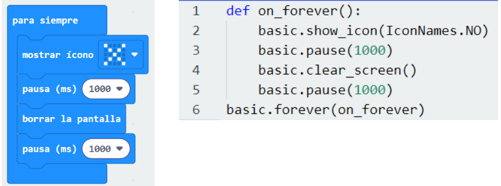

Conexión de los lenguajes de programación visuales con los textuales
Los lenguajes de programación visuales utilizan bloques gráficos que representan diferentes acciones o instrucciones. Estos bloques se conectan en secuencia para crear programas, usando elementos con colores y formas en lugar de texto. Esto los hace ideales para aprender a programar de manera intuitiva.
Por ejemplo, imagina que quieres que un personaje en un juego se mueva hacia adelante y salte para esquivar un obstáculo. Con un lenguaje de programación visual, simplemente unirías los bloques de «avanzar» y «saltar» para lograrlo.
Por otro lado, los lenguajes de programación textuales implican escribir código usando palabras y símbolos. Es como aprender un nuevo idioma que el ordenador entiende. Aunque puede parecer más complicado al principio, te permite crear programas más avanzados y entender en profundidad cómo funcionan las aplicaciones.
Este es un pequeño programa gráfico que simula un carril cortado de una carretera, mostrando un aspa que parpadea cada segundo:

Cada uno de estos dos tipos de lenguajes tienen sus ventajas e inconvenientes:
| PROGRAMACIÓN VISUAL | PROGRAMACIÓN TEXTUAL |
| Se usan formas geométricas coloreadas que podemos arrastrar por la pantalla y encajarlas entre ellas. | Es como aprender un idioma: necesitamos conocer el vocabulario (instrucciones, palabras clave,…) y la sintaxis (operadores, estructuras, tipos de datos,…) para construir las frases correctamente. |
| Es sencilla e intuitiva. Evita los errores de escritura. Se aprende rápido. | Permite abordar proyectos complejos. Es el que se usa profesionalmente. |
| Es difícil de implementar en proyectos grandes. Solo se pueden programar dispositivos muy concretos. | Requiere un aprendizaje más lento y profundo. Requiere un alto grado de abstracción. |
| Ejemplos: Scratch, MakeCode, Blockly, App Inventor, ArduinoBlocks,… | Ejemplos: Python, C++, Java, Kotlin, JavaScript,… |